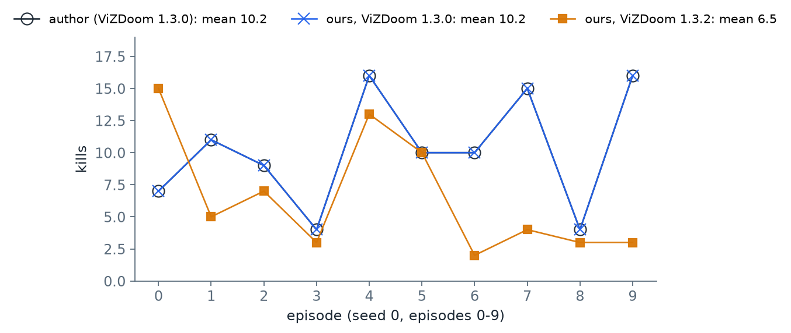

PART 3
六個步驟，每一步先寫下「怎樣算對上」再跑：資料、子圖、驗證、校準、七個條件、統計
重現的每一步都要先回答：本機的數字要和作者的差多少以內，才算對上？答案取決於那一步有沒有隨機性、隨機性有沒有被固定住。這一頁用三種判定標準：
| 判定標準 | 什麼時候用 | 本頁哪些步驟 |
|---|---|---|
| 逐位相同：檔案或數字一個位元都不差 | 這一步沒有隨機性，或隨機性由亂數種子完全固定 | FF1、FF2、FF4、FF5 |
| 在誤差範圍內：與作者的值相差不超過一個事先訂好的比例 | 這一步的隨機輸入在不同電腦上不保證相同 | FF3（訂 ±20%） |
| 形狀相同：條件之間的高低順序與差距方向一樣 | 環境的某個版本和作者不同，數字本來就不會一樣 | 換成 ViZDoom 1.3.2 之後的 FF5（第 8 節） |
骰子是說明用的例子，不是實驗數字；ViZDoom 1.3.2 的結果見第 8 節。
| 步驟 | 做什麼 | 判定標準 | 結果 |
|---|---|---|---|
| FF1 | 核對連線表 | 逐位相同 | 相同：138,639 顆神經元、15,091,983 條連結、54,492,922 個突觸，與 FlyWire 官方檔逐條一致 |
| FF2 | 重新抽出子圖 | 逐位相同 | 相同：兩個輸出檔的 md5（檔案內容的指紋，見第 4 節）與作者附的檔案一致 |
| FF3 | 子圖與全腦的反應比較 | 大於 10 Hz 的項目在作者值的 ±20% 內，方向相同 | 12 項中 11 項在範圍內，1 項 +22%；方向全部相同 |
| FF4 | 校準閾值 | 逐位相同 | 相同：轉向 130.93、開火 95.68；打亂接線 40.46、8.44 |
| FF5 | 七個條件各玩 10 局 | 逐位相同 | 70 局全部相同 |
| FF6 | 統計檢定 | 逐位相同 | 相同：平均、標準差、p 值都一樣 |
每一列的數字出處見下面對應的小節。
步驟代號 FF1–FF6 是本課自己編的，下載包裡的 fruitfly_lab/run_all.sh 照這個順序執行，每一步的終端輸出存在 logs/、數字存在 results/。
fruitfly-lab 不直接讀 FlyWire 的原始檔，而是讀 Shiu 全腦模型 repo 附的 Connectivity_783.parquet——Shiu 等人從 FlyWire v783 整理出來的連線表。所以第一步要確認：這份二手整理和 FlyWire 官方發布的連線表是不是同一份。
比對的對象是 FlyWire 官方的 proofread_connections_783.feather。官方檔把「同一對神經元在不同神經氈裡的連結」分成不同列，共 16,847,997 列；按神經元對合併之後是 15,091,983 條連結。兩份逐條比對：
| 項目 | Shiu 的連線表 | FlyWire 官方檔（合併後） |
|---|---|---|
| 神經元 | 138,639 | 138,639 |
| 連結 | 15,091,983 | 15,091,983 |
| 突觸總數 | 54,492,922 | 54,492,922 |
| 只出現在其中一份的連結 | 0 | 0 |
由 ext/ff1_compare_conn.py 算出，輸出在 out/fruitfly/logs/ff1_conn.log。
官方 feather 檔要另外下載，所以下載包的 FF1 預設只印出 Shiu 連線表的三個數字；另外下載了官方檔的話，設定 FLYWIRE_FEATHER 就會做逐條比對（見 PART 2 第 3 節）。
抽子圖還需要一個註解檔：每顆神經元屬於哪個細胞型態、在哪一側。這個檔案在 GitHub 上會持續更新——本課用的版本與更早下載的一份相比，cell_type 欄有 232 列不同。這不影響重現：下一步 FF2 抽出的子圖逐位相同，代表子圖用到的那幾種細胞型態沒有被改到。
用作者的 flycircuit/extract.py 重新抽一次子圖，比對兩個輸出檔的 md5（一個檔案內容的 32 字元指紋，內容差一個位元，指紋就完全不同）：
7c97b8f2db09ad880be0394ba1c7e9c0 circuit/edges.bin
25a0ca03374cd3591beacb575a441dc2 circuit/meta.json重新抽出與作者附的檔案，md5 完全相同。輸出在 out/fruitfly/logs/ff2_md5_rerun.txt 與 ff2_md5_committed.txt。
抽出來的子圖：3,963 顆神經元、354,879 條連結、38% 抑制性。
切出子圖會丟掉子圖外的所有輸入。作者用一個驗證來說明這樣切還算合理：用 100 Hz 刺激一側的 LC10a，比較三種模型裡下游神經元的放電率——子圖、打亂接線的子圖、以及 Shiu 的全腦模型（用 Brian2 模擬全部 138,639 顆神經元）。每種跑 5 次、每次 1 秒。
這一步有隨機的輸入放電，而作者附的數字和本機重跑的數字並不相同（子圖與打亂接線兩種模型在本機重跑兩次是逐位相同的，但與作者附的檔案不同，原因本課沒有追到），所以判定標準訂成：大於 10 Hz 的項目，與作者的值相差在 ±20% 以內，而且反應落在同一側。
| 刺激 | 模型 | DNa02 左／右（作者） | 本機 | AOTU019 左／右（作者） | 本機 |
|---|---|---|---|---|---|
| 左眼 LC10a | 子圖 | 103.8 ／ 0.0 | 93.2 ／ 0.0 | 222.4 ／ 0.0 | 224.8 ／ 0.0 |
| 左眼 LC10a | 打亂接線 | 21.0 ／ 0.2 | 21.2 ／ 0.4 | 1.0 ／ 21.6 | 0.8 ／ 26.4 |
| 左眼 LC10a | 全腦 | 105.6 ／ 0.0 | 109.6 ／ 0.0 | 171.2 ／ 0.0 | 171.8 ／ 0.0 |
| 右眼 LC10a | 子圖 | 0.0 ／ 4.0 | 0.0 ／ 4.4 | 0.0 ／ 243.6 | 0.0 ／ 242.0 |
| 右眼 LC10a | 打亂接線 | 46.0 ／ 0.0 | 45.0 ／ 0.0 | 17.6 ／ 36.0 | 19.2 ／ 34.4 |
| 右眼 LC10a | 全腦 | 0.0 ／ 58.8 | 0.0 ／ 61.6 | 0.0 ／ 184.8 | 0.0 ／ 185.4 |
單位 Hz。作者的值出自作者附的 output/validation.json（收在 out/fruitfly/validation_author.json），本機的值在 out/fruitfly/validation_local.json。
大於 10 Hz 的項目共 12 項，11 項在 ±20% 以內；粗體那一項（打亂接線、左眼刺激時的 AOTU019 右）是 +22%（作者 21.6 Hz、本機 26.4 Hz）。它屬於打亂接線這個對照組，而且反應落在同一側，不影響這一步要驗證的事：完整子圖與全腦在兩側都把訊號送到同一側的 DNa02。
表裡還有一個值得注意的數字：右眼刺激時，子圖的 DNa02 右只有 4.4 Hz，全腦卻有 61.6 Hz。作者也得到同樣的落差（4.0 對 58.8），但在 README 只標了「同側、偏弱」。這個落差是怎麼來的，放在 PART 5 第 5 節追。
照 PART 1 第 4 節的校準流程重跑一次，兩組閾值都與作者附的檔案逐位相同：
| 迴路 | 轉向閾值 | 開火閾值 |
|---|---|---|
| 完整接線 | 130.93 | 95.68 |
打亂接線（scrambled_cal 用） | 40.46 | 8.44 |
輸出在 out/fruitfly/local_doom_vizdoom130/calibration_fly.json 與 calibration_scrambled.json。
七個條件（定義見 PART 1 第 5 節）各玩 10 局，亂數種子與作者相同。用和作者一樣的 ViZDoom 1.3.0，70 局的擊殺數全部逐局相同，所以平均、標準差與 p 值也完全相同：
| 條件 | 每局擊殺（10 局） | 平均 ± 標準差 | p（對完整接線） |
|---|---|---|---|
oracle | 11 14 13 8 15 10 5 11 11 17 | 11.5 ± 3.47 | 0.348 |
fly | 7 11 9 4 16 10 10 15 4 16 | 10.2 ± 4.47 | — |
lesion025 | 2 11 4 3 3 2 16 1 3 10 | 5.5 ± 5.02 | 0.048 |
scrambled_cal | 0 1 0 0 0 1 1 1 2 1 | 0.7 ± 0.67 | 0.002 |
scrambled | 0 0 0 0 0 0 0 0 0 0 | 0.0 ± 0.0 | 0.002 |
lesion | 0 0 0 0 0 0 0 0 0 0 | 0.0 ± 0.0 | 0.002 |
random | 1 0 1 1 1 1 1 1 1 1 | 0.9 ± 0.32 | 0.002 |
本機與作者的逐局數字都在 out/fruitfly/local_doom_vizdoom130/ 與 out/fruitfly/author_doom/ 的 analysis.json。p 值是作者的 doom/analyze.py 算的配對置換檢定。
p 值是「如果兩個條件其實沒有差別，純靠運氣得到這麼大（或更大）差距的機率」。慣例上小於 0.05 就說差距顯著。表上 lesion025 的 0.048 剛好低於這條線；10 局夠不夠，放在 PART 5 第 2 節用 50 局重新檢查。
逐局相同還說明了一件事：模型的神經元模擬（作者在 macOS、本課在 Linux）在兩台電腦上給出完全相同的結果。所以只要分數不同，差異只可能來自遊戲本身——第 8 節就是這種情形。
用 pip install vizdoom 不指定版本，會裝到當時最新的 1.3.2。同一套程式、同一組種子，換成 1.3.2 跑：

scripts/make_figures.py 從 out/fruitfly/ 的三份 fly.json 畫出。連不使用神經網路的 oracle 逐局分數也變了（1.3.0：11 14 13 8 15 10 5 11 11 17；1.3.2：10 12 11 10 13 15 5 14 10 19）。oracle 只讀遊戲回報的敵人位置，它的分數會變，代表遊戲本身的隨機抽樣在兩個版本之間不同，不是神經網路的問題。
| 條件 | ViZDoom 1.3.0（與作者相同） | ViZDoom 1.3.2 |
|---|---|---|
oracle | 11.5（p = 0.348） | 11.9（p = 0.019） |
fly | 10.2 | 6.5 |
lesion025 | 5.5（p = 0.048） | 2.8（p = 0.015） |
scrambled_cal | 0.7 | 0.9 |
random | 0.9 | 0.9 |
10 局平均擊殺；p 值對完整接線。1.3.2 的結果在 out/fruitfly/local_doom_vizdoom132/analysis.json。
用「形狀相同」來判定：條件之間的高低順序沒有變，完整接線仍然遠高於打亂接線與隨機，損毀 AOTU025 仍然降分。但有一個結論跟著版本翻了：在作者的版本下，完整接線和 oracle 沒有顯著差別（p = 0.348）；在 1.3.2 下，oracle 顯著較高（p = 0.019）。「果蠅迴路打得跟完美規則一樣好」這句話，只在某一個遊戲版本下成立。
_vizdoom.ini，第一行記著產生它的版本 1.3.0，所以這一次對得回去；沒有這一行，1.3.2 的結果會讓人以為重現失敗。